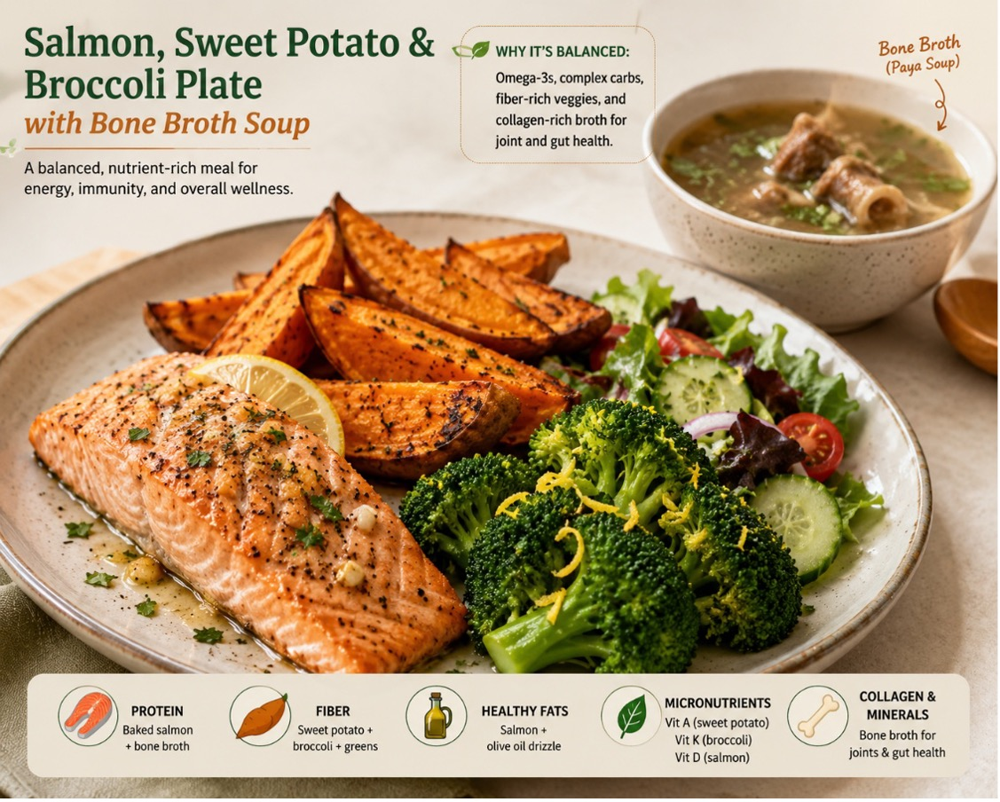

Salmon, Sweet Potato & Broccoli Plate with Bone Broth Soup
Prep Time
15 min
Cook Time
30 min
Serves
2
Why it’s balanced
Omega-3s, complex carbs, fiber-rich veggies, and collagen-rich broth provide excellent support for joint and gut health.
Nutritional Highlights
- Protein: Baked salmon + bone broth
- Fiber: Sweet potato + broccoli + mixed greens
- Healthy fats: Salmon + olive oil drizzle
- Micronutrients: Vitamin A, Vitamin K, Vitamin D
- Collagen + minerals: Bone broth
Ingredients
- 1 salmon fillet (5–6 oz)
- 1 medium sweet potato
- 1 cup broccoli florets
- 1 tbsp olive oil
- 2 garlic cloves (minced)
- Salt and black pepper
- ½ tsp paprika
- ½ tsp dried herbs
- Lemon wedges
Instructions (Salmon Plate)
- Preheat oven to 400°F (200°C).
- Toss sweet potato wedges with olive oil, paprika, salt, and pepper. Bake for 25–30 minutes.
- Season salmon with garlic, herbs, salt, pepper, and a little olive oil.
- Add salmon to the oven for the last 12–15 minutes.
- Steam broccoli for 4–5 minutes and finish with lemon zest or lemon juice.
- Serve salmon with roasted sweet potatoes and broccoli.
Bone Broth
- 1 cup bone broth or paya soup
- Fresh cilantro optional
- Black pepper
Instructions (Bone Broth Soup)
- Prepare the salmon plate as above.
- Heat bone broth in a saucepan for 5–10 minutes.
- Season with black pepper and garnish with cilantro.
- Serve the hot bone broth alongside the salmon meal.
Tip
You can meal prep this plate ahead of time. Store salmon and vegetables separately for best flavor!